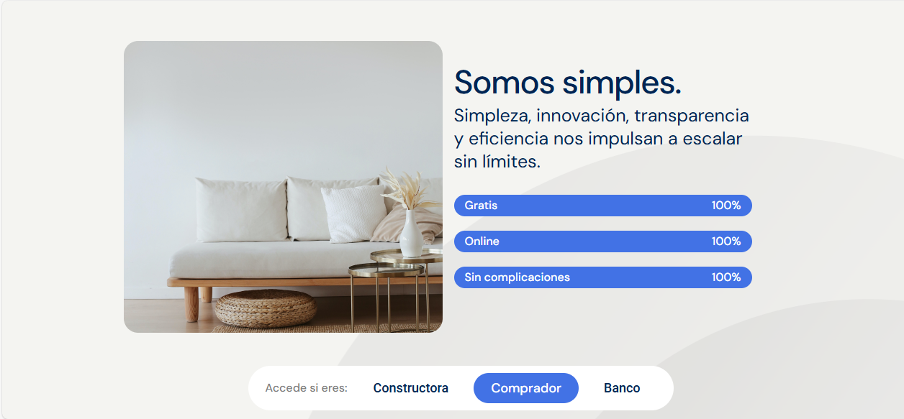
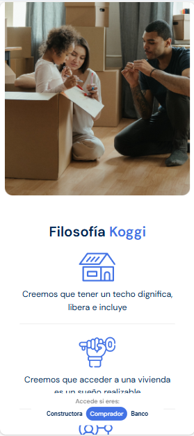

Koggi
Landing page - Elementor - Wordpress Accede al sitio
Accede al sitio
Overview
Koggi, una startup enfocada en la simplificación del proceso de compra de vivienda necesitaba una landing capaz de plasmar esa visión en la web, con la misión principal de unir a compradores y constructoras garantizando la mejor de experiencia de usuario. Wordpress y Elementor fueron las tecnologías usadas para crear está una landing atractiva, flexible e intuitiva como Koggi.
Tecnologías usadas
Una interfaz funcional pero a la vez cercana que apela directamente al sueño de sus usuarios y de muchas personas de tener casa propia para disfrutar con su familia, call to action claros y concisos que invitan a calcular el credito de tu futura vivienda.
Apartado donde se destacan los valores diferenciales de la plataforma así como se eliminan posibles dudas o barreras de los prospectos a la hora de confiar en la plataforma para hacer la intermediación en sus créditos.
Apartado en el que se muestran de manera gráfica los principios o la visión de Koggi de cómo debería ser el mercado de vivienda en Colombia, simple, accesible y enfocado en dignificar a las familias. Usando íconos y colores que otorguen seguridad y confianza en la plataforma y en el proceso de compra de vivienda